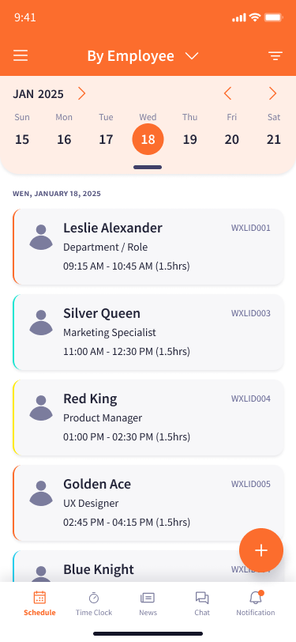
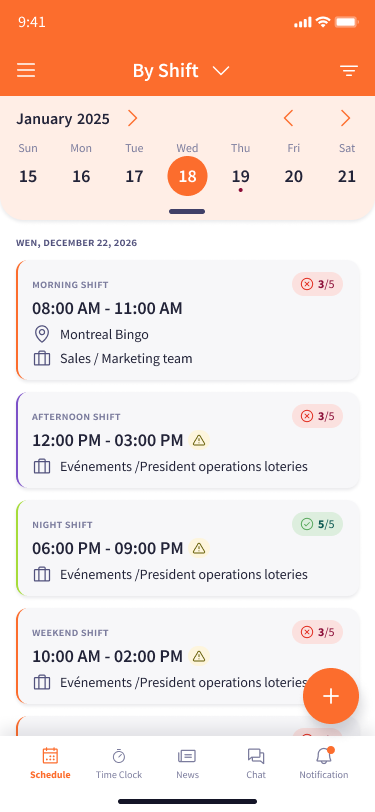
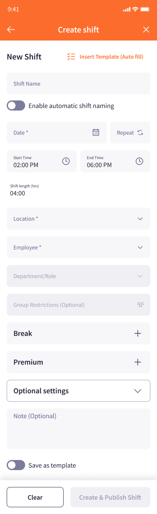
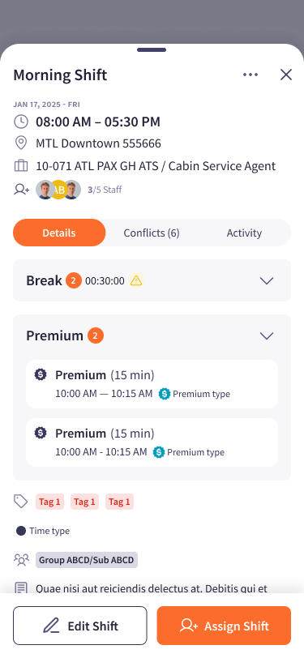
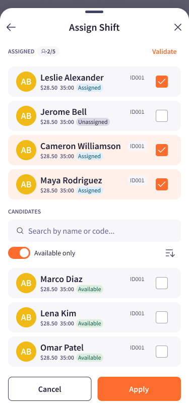
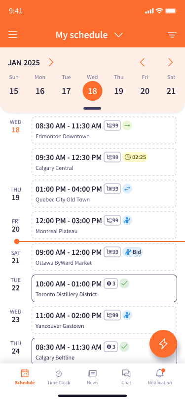

<title>Scheduling From the Floor</title>
<meta name="claude:viewport-fit-sides" content="cover">
<link rel="stylesheet" href="https://fonts.googleapis.com/css2?family=Poppins:wght@500;600&family=Roboto:wght@400;500;700&display=swap">
<style>
/* Layout: navy hero band with headline + two proof figures, a fact sheet that overlaps the band,
   then one reading column (max 760px) of labelled sections; decisions and results break out as grids. */
:root {
  --bg: rgb(247,247,249); --surface: #ffffff; --fg: rgb(34,35,56); --muted: rgb(82,82,125);
  --line: rgb(217,217,227); --accent: rgb(185,57,0); --accent-soft: rgba(252,109,45,.12);
  --hero-bg: rgb(34,35,56); --hero-fg: #ffffff; --hero-muted: rgb(193,194,209); --hero-accent: rgb(252,109,45);
  --hero-line: rgba(255,255,255,.18);
  --display: "Poppins", "Segoe UI", system-ui, sans-serif;
  --body: "Roboto", "Segoe UI", system-ui, sans-serif;
}
@media (prefers-color-scheme: dark) { :root:not([data-theme="light"]) {
  --bg: rgb(20,21,39); --surface: rgb(34,35,56); --fg: rgb(240,240,244); --muted: rgb(177,178,193);
  --line: rgb(54,54,89); --accent: rgb(252,109,45); --accent-soft: rgba(252,109,45,.16);
  --hero-bg: rgb(29,29,48); --hero-fg: #ffffff; --hero-muted: rgb(193,194,209); --hero-accent: rgb(252,109,45);
  --hero-line: rgba(255,255,255,.18); color-scheme: dark } }
:root[data-theme="dark"] {
  --bg: rgb(20,21,39); --surface: rgb(34,35,56); --fg: rgb(240,240,244); --muted: rgb(177,178,193);
  --line: rgb(54,54,89); --accent: rgb(252,109,45); --accent-soft: rgba(252,109,45,.16);
  --hero-bg: rgb(29,29,48); --hero-fg: #ffffff; --hero-muted: rgb(193,194,209); --hero-accent: rgb(252,109,45);
  --hero-line: rgba(255,255,255,.18); color-scheme: dark }

* { box-sizing: border-box }
body { background: var(--bg); color: var(--fg); font-family: var(--body); font-size: 17px; line-height: 1.6 }
.wrap { max-width: 1040px; margin-inline: auto; padding-left: max(16px, env(safe-area-inset-left, 0px)); padding-right: max(16px, env(safe-area-inset-right, 0px)) }
.col { max-width: 760px }
h1, h2, h3 { font-family: var(--display); font-weight: 600; text-wrap: balance; margin: 0 }
p { margin: 0 }
a { color: inherit }
:focus-visible { outline: 3px solid var(--hero-accent); outline-offset: 2px }

/* hero */
.hero { background: var(--hero-bg); color: var(--hero-fg); margin-top: calc(-1 * env(safe-area-inset-top, 0px)); padding-top: calc(env(safe-area-inset-top, 0px) + 20px); padding-bottom: 112px }
.bar { display: flex; justify-content: space-between; align-items: center; gap: 16px; flex-wrap: wrap; padding-bottom: 56px }
.bar-name { font-size: 13px; letter-spacing: .08em; text-transform: uppercase; color: var(--hero-muted) }
.lang { display: flex; border: 1px solid var(--hero-line); border-radius: 999px; padding: 2px }
.lang button { font: 500 13px var(--body); color: var(--hero-muted); background: none; border: 0; border-radius: 999px; min-width: 48px; min-height: 44px; padding: 0 16px; cursor: pointer }
.lang button[aria-pressed="true"] { background: var(--hero-fg); color: rgb(34,35,56) }
.eyebrow { font-size: 13px; font-weight: 500; letter-spacing: .08em; text-transform: uppercase; color: var(--hero-accent) }
.hero h1 { font-size: clamp(2rem, 5.2vw, 3.5rem); line-height: 1.12; max-width: 18ch; margin-top: 16px }
.lede { color: var(--hero-muted); font-size: 1.125rem; max-width: 60ch; margin-top: 24px }
.proof { display: flex; flex-wrap: wrap; gap: 24px 56px; margin-top: 40px }
.proof div { display: flex; align-items: baseline; gap: 12px }
.proof b { font-family: var(--display); font-weight: 600; font-size: 2.75rem; line-height: 1; color: var(--hero-accent); font-variant-numeric: tabular-nums }
.proof span { color: var(--hero-fg); max-width: 22ch; line-height: 1.35; font-size: .95rem }

/* fact sheet */
.facts { background: var(--surface); border: 1px solid var(--line); border-radius: 16px; margin-top: -72px; padding: 8px 32px; display: grid; grid-template-columns: repeat(2, minmax(0, 1fr)); column-gap: 48px }
.facts div { padding: 20px 0; border-bottom: 1px solid var(--line); min-width: 0 }
.facts div:nth-last-child(-n+2) { border-bottom: 0 }
.facts dt { font-size: 12px; font-weight: 500; letter-spacing: .08em; text-transform: uppercase; color: var(--muted) }
.facts dd { margin: 4px 0 0; font-size: .97rem; line-height: 1.5 }

/* sections */
section { padding-block: 72px 0 }
.label { font-size: 13px; font-weight: 500; letter-spacing: .08em; text-transform: uppercase; color: var(--accent) }
section h2 { font-size: clamp(1.5rem, 3.4vw, 2.125rem); line-height: 1.2; margin-top: 12px; max-width: 24ch }
.prose { display: grid; gap: 20px; margin-top: 28px }
.prose strong { font-weight: 700 }
h3 { font-size: 1.0625rem; margin-top: 44px }
.evidence { list-style: none; padding: 0; margin: 20px 0 0; display: grid; gap: 0; border-top: 1px solid var(--line) }
.evidence li { padding: 18px 0; border-bottom: 1px solid var(--line); display: grid; grid-template-columns: 220px minmax(0, 1fr); gap: 8px 32px }
.evidence b { font-weight: 500 }
.evidence span { color: var(--muted) }
blockquote { margin: 0; font-family: var(--display); font-weight: 500; font-size: 1.25rem; line-height: 1.45; padding-left: 24px; border-left: 3px solid var(--accent) }
blockquote footer { font-family: var(--body); font-weight: 400; font-size: .9rem; color: var(--muted); margin-top: 8px }

/* decisions */
.decisions { margin-top: 32px; border-top: 2px solid var(--fg) }
.d-head, .d-row { display: grid; grid-template-columns: minmax(0, 1.05fr) minmax(0, .9fr) minmax(0, 1.5fr); gap: 16px 32px }
.d-head { padding: 12px 0; font-size: 12px; font-weight: 500; letter-spacing: .08em; text-transform: uppercase; color: var(--muted); border-bottom: 1px solid var(--line) }
.d-row { padding: 22px 0; border-bottom: 1px solid var(--line); font-size: .97rem; line-height: 1.55 }
.d-row > div { min-width: 0 }
.d-row .what { font-weight: 500; font-size: 1.02rem }
.d-row .not { color: var(--muted); text-decoration: line-through; text-decoration-color: var(--line); text-decoration-thickness: 1px }
.d-row i { display: none; font-style: normal; font-size: 12px; font-weight: 500; letter-spacing: .08em; text-transform: uppercase; color: var(--muted); margin-bottom: 4px; text-decoration: none }
.aside { background: var(--accent-soft); border-radius: 8px; padding: 20px 24px; margin-top: 32px }

/* diagram */
.figure { background: var(--surface); border: 1px solid var(--line); border-radius: 16px; margin-top: 32px; overflow-x: auto }
.figure svg { display: block; width: 100%; min-width: 640px; height: auto; font-family: var(--body) }
.g-box { fill: none; stroke: var(--line); stroke-width: 1.25 }
.g-main { fill: var(--accent-soft); stroke: var(--accent); stroke-width: 2 }
.g-line { fill: none; stroke: var(--muted); stroke-width: 1.25 }
.g-head { fill: var(--muted) }
.g-name { fill: var(--fg); font-weight: 500; font-size: 14px }
.g-body { fill: var(--muted); font-size: 12px }
figcaption, .caption { color: var(--muted); font-size: .92rem; margin-top: 12px }

/* screens + rules */
.screens { display: grid; grid-template-columns: repeat(auto-fit, minmax(280px, 1fr)); gap: 0 48px; margin-top: 20px; border-top: 1px solid var(--line) }
.screens div { padding: 18px 0; border-bottom: 1px solid var(--line) }
.screens b { display: block; font-weight: 500 }
.screens span { color: var(--muted); font-size: .97rem }
.rules { margin: 20px 0 0; padding: 0; list-style: none; display: grid; gap: 16px }
.rules li { padding-left: 20px; position: relative }
.rules li::before { content: ""; position: absolute; left: 0; top: .7em; width: 8px; height: 2px; background: var(--accent) }
.rules b { font-weight: 500 }

/* results */
.results { display: grid; grid-template-columns: repeat(4, minmax(0, 1fr)); gap: 32px; margin-top: 36px; border-top: 2px solid var(--fg); padding-top: 28px }
.results b { font-family: var(--display); font-weight: 600; font-size: 2.5rem; line-height: 1; color: var(--accent); font-variant-numeric: tabular-nums; display: block }
.results strong { display: block; font-weight: 500; margin-top: 12px }
.results span { color: var(--muted); font-size: .92rem; line-height: 1.45; display: block; margin-top: 4px }

.closing { background: var(--surface); border-top: 1px solid var(--line); margin-top: 88px; padding-block: 64px 80px }
.closing section { padding-block: 0 }
footer.page { color: var(--muted); font-size: .88rem; margin-top: 48px }

@media (max-width: 760px) {
  body { font-size: 16px }
  .hero { padding-bottom: 96px }
  .bar { padding-bottom: 40px }
  .facts { grid-template-columns: 1fr; padding: 4px 20px }
  .facts div:nth-last-child(2) { border-bottom: 1px solid var(--line) }
  .evidence li { grid-template-columns: 1fr }
  .d-head { display: none }
  .d-row { grid-template-columns: 1fr }
  .d-row i { display: block }
  .results { grid-template-columns: repeat(2, minmax(0, 1fr)) }
  section { padding-block: 56px 0 }
}
@media (prefers-reduced-motion: no-preference) { .lang button { transition: background .15s ease-out, color .15s ease-out } }

/* polish: hero schematic, before/after, cards */
.hero-grid { display: grid; grid-template-columns: minmax(0, 1fr) 240px; gap: 56px; align-items: end }
.phone { display: block; width: 240px; height: auto; margin-bottom: -40px }
.p-frame { fill: rgba(255,255,255,.04); stroke: var(--hero-line); stroke-width: 2 }
.p-soft { fill: rgba(255,255,255,.14) }
.p-mid { fill: rgba(255,255,255,.28) }
.p-row { fill: rgba(255,255,255,.06); stroke: var(--hero-line); stroke-width: 1 }
.p-draft { fill: none; stroke: var(--hero-muted); stroke-width: 1; stroke-dasharray: 4 3 }
.p-accent { fill: var(--hero-accent) }
.p-plus { stroke: rgb(34,35,56); stroke-width: 2.5; stroke-linecap: round }
.label::before { content: ""; display: inline-block; width: 24px; height: 2px; background: var(--accent); vertical-align: middle; margin-right: 10px }
.ba { display: grid; gap: 12px; margin-top: 32px }
.ba-row { display: grid; grid-template-columns: 84px minmax(0, 1fr); gap: 8px 16px; align-items: center; background: var(--surface); border: 1px solid var(--line); border-radius: 12px; padding: 16px 20px }
.ba-tag { font-size: 12px; font-weight: 500; letter-spacing: .08em; text-transform: uppercase; color: var(--muted) }
.ba ol { list-style: none; display: flex; flex-wrap: wrap; gap: 6px 0; margin: 0; padding: 0 }
.ba li { display: flex; align-items: center; font-size: .95rem }
.ba li + li::before { content: "\2192"; color: var(--muted); margin: 0 10px }
.ba-row.is-after { border-color: var(--accent); background: var(--accent-soft) }
.ba-row.is-after .ba-tag { color: var(--accent) }
.ba-row.is-after li { font-weight: 500 }
.results { border-top: 0; padding-top: 0; gap: 16px }
.results > div { background: var(--surface); border: 1px solid var(--line); border-radius: 12px; padding: 24px 20px }
@media (max-width: 860px) { .hero-grid { grid-template-columns: 1fr } .phone { display: none } }
@media (max-width: 760px) { .ba-row { grid-template-columns: 1fr } }
.phone-wrap { width: 240px; height: 440px; overflow: hidden; border-radius: 28px 28px 0 0; border: 1px solid var(--hero-line); border-bottom: 0; margin-bottom: -40px; background: #fff }
.phone-wrap img { display: block; width: 100%; height: auto }
.shots { display: grid; grid-template-columns: repeat(3, minmax(0, 1fr)); gap: 40px 28px; margin-top: 24px; align-items: start }
.shots figure { margin: 0; min-width: 0 }
.shots img { display: block; width: 100%; height: auto; border-radius: 20px; border: 1px solid var(--line); background: #fff }
.shots figcaption b { display: block; font-weight: 500; margin-top: 14px }
.shots figcaption span { display: block; color: var(--muted); font-size: .92rem; line-height: 1.45; margin-top: 4px }
@media (max-width: 860px) { .phone-wrap { display: none } }
@media (max-width: 760px) { .shots { grid-template-columns: repeat(2, minmax(0, 1fr)); gap: 28px 16px } }
</style>

<header class="hero">
  <div class="wrap">
    <div class="bar">
      <span class="bar-name" data-en="Product design &#183; Case study" data-fr="Design produit &#183; &#201;tude de cas">Product design &#183; Case study</span>
      <div class="lang" role="group" aria-label="Language">
        <button type="button" id="lang-en" aria-pressed="true">EN</button>
        <button type="button" id="lang-fr" aria-pressed="false">FR</button>
      </div>
    </div>

    <div class="hero-grid"><div>
    <div lang="en" data-lang="en">
      <p class="eyebrow">Mobile app &#183; Airport ground services</p>
      <h1>Fix the schedule from the gate, not the desk.</h1>
      <p class="lede">WorkAxle's manager mobile app could only show a read-only schedule, so airport floor managers walked back to a desk for every change. I designed the schedule and shift management experience that removes that walk, then reused the same shell for the employee app.</p>
      <div class="proof">
        <div><b>1</b><span>action from a staffing gap to a published shift</span></div>
        <div><b>14</b><span>validation cases specified as the only guardrail</span></div>
      </div>
    </div>

    <div lang="fr" data-lang="fr" hidden>
      <p class="eyebrow">Application mobile &#183; Services au sol a&#233;roportuaires</p>
      <h1>Corriger l'horaire depuis la porte, pas depuis un bureau.</h1>
      <p class="lede">L'application mobile pour gestionnaires de WorkAxle n'affichait qu'un horaire en lecture seule : les gestionnaires de terrain en a&#233;roport retournaient &#224; un bureau pour chaque modification. J'ai con&#231;u l'exp&#233;rience d'horaire et de gestion des quarts qui supprime ce d&#233;tour, puis r&#233;utilis&#233; la m&#234;me structure pour l'application employ&#233;.</p>
      <div class="proof">
        <div><b>1</b><span>action entre un manque de personnel et un quart publi&#233;</span></div>
        <div><b>14</b><span>cas de validation sp&#233;cifi&#233;s comme seul garde-fou</span></div>
      </div>
    </div>
    </div>
      <div class="phone-wrap" aria-hidden="true"></div>
    </div>
  </div>
</header>

<main>
<!-- ============================== ENGLISH ============================== -->
<div lang="en" data-lang="en">
  <div class="wrap">
    <dl class="facts">
      <div><dt>Role</dt><dd>Product Designer: flows, UX, UI, prototype, validation rules, accessibility specs, design system components</dd></div>
      <div><dt>Team</dt><dd>Product manager, mobile squad (React Native), account manager for the requesting client</dd></div>
      <div><dt>Platform</dt><dd>WorkAxle Management app and Employee app, iOS and Android</dd></div>
      <div><dt>Duration</dt><dd>July to November 2026 for design; build in progress</dd></div>
      <div><dt>Client</dt><dd>A ground-services operator working across US and Canadian airports (anonymised)</dd></div>
      <div><dt>Status</dt><dd>Four of six design tickets done, two still in progress. Build is behind two rollout flags, read-only first.</dd></div>
    </dl>

    <section class="col">
      <p class="label">The real problem</p>
      <h2>A staffing gap at the gate, and a walk to a desk.</h2>
      <div class="prose">
        <p>Floor managers see a staffing gap at the gate and cannot act on it until they reach a computer. The mobile schedule was a view-only list, one day at a time, with rows that could not be opened.</p>
        <p>The client's brief was a list of eight features to port from the web app. The problem behind it was a response-time problem: a flight is delayed or someone calls in sick, and the fix waits for a walk to a desk or a phone call to a colleague who is sitting at one. Pending shift trades wait too, which blocks two employees at once.</p>
      </div>
      <div class="ba">
        <div class="ba-row"><span class="ba-tag">Before</span><ol><li>See the gap</li><li>Walk to a desk</li><li>Open the web app</li><li>Walk back</li></ol></div>
        <div class="ba-row is-after"><span class="ba-tag">After</span><ol><li>See the gap</li><li>Create and publish on the phone</li><li>Employee notified</li></ol></div>
      </div>
    </section>

    <section class="col">
      <p class="label">The insight</p>
      <h2>They did not need the web scheduler on a phone.</h2>
      <div class="prose">
        <p>Managers needed to close one gap in one action while standing on the ramp. Parity with the web's create-then-publish model would have kept the delay it was meant to remove, because a shift saved as a draft covers nobody.</p>
        <p>That reframed the design target from "all web fields on mobile" to "the fastest safe path from seeing a gap to an employee being notified".</p>
        <blockquote>"One day at a time is very annoying&#8230; there's definitely a lot of room to improve here."<footer>Product manager, design review, 27 July 2026</footer></blockquote>
      </div>
      <h3>Where the insight came from</h3>
      <ul class="evidence">
        <li><b>Workaround observed by the client</b><span>Managers leave the floor for every schedule action, or call someone at a desk to make the change for them.</span></li>
        <li><b>Audit of the existing screen</b><span>The manager schedule showed published shifts only, stopped after 100 rows, and offered no date jump. Overnight shifts that began the previous day were dropped from the list, which hides red-eye work at an airport.</span></li>
        <li><b>A constraint that became a lever</b><span>Every backend operation already existed, so the work was entirely mobile UI. Design decisions, not API work, set the scope.</span></li>
      </ul>
    </section>

    <section>
      <div class="col">
        <p class="label">Key decisions</p>
        <h2>Speed and safety pull in opposite directions.</h2>
        <div class="prose"><p>If saving publishes, nothing stands between a mistake and the whole team's phones. Each decision below names what was chosen, what was set aside, and why.</p></div>
      </div>
      <div class="decisions">
        <div class="d-head"><span>Decision</span><span>Rejected option</span><span>Reason and consequence</span></div>
        <div class="d-row"><div class="what"><i>Decision</i>One action, Create &amp; Publish Shift, with the employee mandatory</div><div><i>Rejected option</i><span class="not">Mirror the web: create, then publish as a second step</span></div><div><i>Reason and consequence</i>Intraday fixes need the employee notified at once. Consequence: validation becomes the only guardrail, so I specified 14 validation cases with blocking, warning and fallback patterns.</div></div>
        <div class="d-row"><div class="what"><i>Decision</i>One employee per form</div><div><i>Rejected option</i><span class="not">My first proposal: select several employees to create identical shifts</span></div><div><i>Reason and consequence</i>Role, group restrictions and time type derive from one employee and date, and a work package cannot be split across people. I reverted after the review.</div></div>
        <div class="d-row"><div class="what"><i>Decision</i>Two views per day, by employee and by shifts, each the entry to its own creation mode</div><div><i>Rejected option</i><span class="not">One list and one form with a mode switch</span></div><div><i>Reason and consequence</i>Quantity-based shifts ("5 needed, 2 assigned") are a different job from assigning a named person. Separate entry points keep each form short. This model came from the PM; I designed both flows.</div></div>
        <div class="d-row"><div class="what"><i>Decision</i>Duplicate reachable by long-press and a visible kebab menu, assignee never copied</div><div><i>Rejected option</i><span class="not">Long-press only</span></div><div><i>Reason and consequence</i>A hidden gesture is fast for experts and invisible to everyone else. Clearing the assignee prevents same-day double-booking.</div></div>
        <div class="d-row"><div class="what"><i>Decision</i>Work packages picked from a list</div><div><i>Rejected option</i><span class="not">Port the web's timeline map</span></div><div><i>Reason and consequence</i>A horizontal timeline does not fit a phone held in one hand.</div></div>
        <div class="d-row"><div class="what"><i>Decision</i>Reuse the manager shell (week strip, date jump, two views) for the employee schedule</div><div><i>Rejected option</i><span class="not">Keep the employee app's older list</span></div><div><i>Reason and consequence</i>Managers and employees read the same schedule the same way, and the components are built once.</div></div>
      </div>
      <p class="aside col">One correction is worth showing. My first designs started from the employee app's schedule. The review caught that the feature belongs to the manager app, whose schedule was far more limited. That turned one ticket into three: the manager schedule redesign, assigned creation, and by-shift creation.</p>
    </section>

    <section>
      <div class="col">
        <p class="label">The solution</p>
        <h2>Two views, two ways to create, one validation gate.</h2>
        <div class="prose"><p>A manager opens the schedule, picks the view that matches the job, and reaches a published shift through one validation gate.</p></div>
      </div>
      <figure class="figure" style="margin-inline:0"><div id="diagram-en"></div></figure>
      <p class="caption col">Both creation modes pass through the same validation before anyone is notified. Before this design the path was: see the gap, walk to a desk, open the web app, walk back.</p>

      <h3>Key screens</h3>
      <div class="shots">
        <figure><figcaption><b>Manager schedule, by employee</b><span>Week strip, date jump, one row per employee, and + to create a shift.</span></figcaption></figure>
        <figure><figcaption><b>Manager schedule, by shifts</b><span>Each shift with its assigned count, such as 3/5, and a warning when something needs attention.</span></figcaption></figure>
        <figure><figcaption><b>Create &amp; Publish Shift form</b><span>Role and group restrictions stay disabled until employee and date are set. Breaks and premiums are sections; templates prefill the form.</span></figcaption></figure>
        <figure><figcaption><b>Shift detail sheet</b><span>Details, Conflicts and Activity tabs, the staffing count, and Edit or Assign from one place.</span></figcaption></figure>
        <figure><figcaption><b>Assign shift</b><span>Who is assigned, candidates filtered to those available, and Validate before Apply.</span></figcaption></figure>
        <figure><figcaption><b>Employee schedule</b><span>The same shell as an agenda: a status on each shift, a line for the current time, and quick actions.</span></figcaption></figure>
      </div>

      <div class="col">
        <h3>Rules and edge cases I specified</h3>
        <ul class="rules">
          <li><b>Validation.</b> Fourteen cases across form errors and company rules (overlap, rest time, weekly hours, qualifications, time off). Several violations appear in one sheet, blocking items first.</li>
          <li><b>Publishing.</b> One shift at a time on mobile; bulk publish stays on the web. Past shifts carry a text badge and a warning.</li>
          <li><b>Duplicate.</b> Copies planned times, location, role and breaks. Never copies the assignee or worked time.</li>
          <li><b>Employee schedule.</b> Designed so an employee can answer three questions without leaving the tab: when and where do I work next, does a shift need my action, who else is working that day.</li>
          <li><b>Accessibility, WCAG 2.2 AA.</b> Status never relies on colour alone, touch targets are at least 44 pt / 48 dp, and errors are tied to their fields and announced to screen readers.</li>
        </ul>
      </div>
    </section>

    <section>
      <div class="col">
        <p class="label">Impact, stated honestly</p>
        <h2>Still being built, so no usage number yet.</h2>
        <div class="prose"><p>What can be observed today, as team results to which I contributed the design:</p></div>
      </div>
      <div class="results">
        <div><b>4 / 6</b><strong>Design tickets done</strong><span>A brief of eight features became a sequenced design: schedule redesign, two creation modes, assignment, publishing.</span></div>
        <div><b>2</b><strong>Rollout flags</strong><span>The read-only schedule can ship to every client before any write action. The two-view design made that sequencing possible.</span></div>
        <div><b>+2</b><strong>Clients linked</strong><span>The epic was scoped for every client, and similar requests from two other clients were linked to it during the project.</span></div>
        <div><b>1</b><strong>Shared shell</strong><span>The employee schedule adopted the manager shell, so both apps share one navigation model and one set of components.</span></div>
      </div>
      <p class="caption col">What I would measure after release: time from opening the schedule to a published shift, share of intraday schedule changes made on mobile, time to approve a trade, and how often a validation warning is overridden.</p>
    </section>
  </div>

  <div class="closing">
    <div class="wrap">
      <section class="col">
        <p class="label">Reflection</p>
        <h2>What I would do differently.</h2>
        <div class="prose">
          <p>Making save equal publish moved all the risk into validation, and I specified validation last. Next time I would define the failure cases before drawing the form, because they decide what the form may promise.</p>
          <p>I also worked from the account team's description of floor managers, not from the managers themselves. An hour of shadowing at a gate would have tested the one-hand, one-action assumption before design instead of after.</p>
        </div>
        <footer class="page">Jing Su Macarez &#183; Digital Product Designer &#183; November 2026</footer>
      </section>
    </div>
  </div>
</div>

<!-- ============================== FRAN&#199;AIS ============================== -->
<div lang="fr" data-lang="fr" hidden>
  <div class="wrap">
    <dl class="facts">
      <div><dt>R&#244;le</dt><dd>Product Designer : parcours, UX, UI, prototype, r&#232;gles de validation, sp&#233;cifications d'accessibilit&#233;, composants du design system</dd></div>
      <div><dt>&#201;quipe</dt><dd>Chef de produit, squad mobile (React Native), gestionnaire de compte du client demandeur</dd></div>
      <div><dt>Plateforme</dt><dd>Applications WorkAxle Management et Employ&#233;, iOS et Android</dd></div>
      <div><dt>Dur&#233;e</dt><dd>Juillet &#224; novembre 2026 pour le design ; d&#233;veloppement en cours</dd></div>
      <div><dt>Client</dt><dd>Un op&#233;rateur de services au sol pr&#233;sent dans des a&#233;roports am&#233;ricains et canadiens (anonymis&#233;)</dd></div>
      <div><dt>Statut</dt><dd>Quatre tickets de design sur six termin&#233;s, deux encore en cours. D&#233;veloppement derri&#232;re deux flags de d&#233;ploiement, lecture seule d'abord.</dd></div>
    </dl>

    <section class="col">
      <p class="label">Le probl&#232;me r&#233;el</p>
      <h2>Un manque de personnel &#224; la porte, et un aller-retour au bureau.</h2>
      <div class="prose">
        <p>Les gestionnaires de terrain constatent un manque de personnel &#224; la porte et ne peuvent rien faire avant d'atteindre un ordinateur. L'horaire mobile &#233;tait une liste en lecture seule, un jour &#224; la fois, dont les lignes ne s'ouvraient pas.</p>
        <p>Le brief du client &#233;tait une liste de huit fonctionnalit&#233;s &#224; porter depuis l'application web. Le probl&#232;me sous-jacent &#233;tait un probl&#232;me de temps de r&#233;action : un vol est retard&#233; ou quelqu'un se d&#233;clare malade, et la correction attend un aller-retour au bureau ou un appel &#224; un coll&#232;gue qui y est assis. Les &#233;changes de quarts en attente patientent aussi, ce qui bloque deux employ&#233;s &#224; la fois.</p>
      </div>
      <div class="ba">
        <div class="ba-row"><span class="ba-tag">Avant</span><ol><li>Constater le manque</li><li>Marcher jusqu'&#224; un bureau</li><li>Ouvrir l'application web</li><li>Revenir</li></ol></div>
        <div class="ba-row is-after"><span class="ba-tag">Apr&#232;s</span><ol><li>Constater le manque</li><li>Cr&#233;er et publier sur le t&#233;l&#233;phone</li><li>Employ&#233; notifi&#233;</li></ol></div>
      </div>
    </section>

    <section class="col">
      <p class="label">L'insight</p>
      <h2>Ils n'avaient pas besoin du planificateur web sur un t&#233;l&#233;phone.</h2>
      <div class="prose">
        <p>Les gestionnaires avaient besoin de combler un manque en une seule action, debout sur le tarmac. Reproduire le mod&#232;le web &#171; cr&#233;er, puis publier &#187; aurait conserv&#233; le d&#233;lai qu'on voulait supprimer, car un quart enregistr&#233; en brouillon ne couvre personne.</p>
        <p>La cible de design est donc pass&#233;e de &#171; tous les champs du web sur mobile &#187; &#224; &#171; le chemin s&#251;r le plus court entre le constat d'un manque et la notification d'un employ&#233; &#187;.</p>
        <blockquote>&#171; Un jour &#224; la fois, c'est tr&#232;s aga&#231;ant&#8230; il y a clairement beaucoup &#224; am&#233;liorer ici. &#187;<footer>Chef de produit, revue de design, 27 juillet 2026 (traduit de l'anglais)</footer></blockquote>
      </div>
      <h3>D'o&#249; vient l'insight</h3>
      <ul class="evidence">
        <li><b>Contournement observ&#233; par le client</b><span>Les gestionnaires quittent le terrain pour chaque action sur l'horaire, ou appellent quelqu'un &#224; un bureau pour faire la modification &#224; leur place.</span></li>
        <li><b>Audit de l'&#233;cran existant</b><span>L'horaire gestionnaire n'affichait que les quarts publi&#233;s, s'arr&#234;tait apr&#232;s 100 lignes et n'offrait aucun saut de date. Les quarts de nuit commenc&#233;s la veille disparaissaient de la liste, ce qui masque le travail de nuit en a&#233;roport.</span></li>
        <li><b>Une contrainte devenue levier</b><span>Toutes les op&#233;rations backend existaient d&#233;j&#224; : le travail &#233;tait enti&#232;rement de l'interface mobile. Ce sont les d&#233;cisions de design, pas les API, qui ont fix&#233; le p&#233;rim&#232;tre.</span></li>
      </ul>
    </section>

    <section>
      <div class="col">
        <p class="label">D&#233;cisions cl&#233;s</p>
        <h2>Rapidit&#233; et s&#233;curit&#233; tirent en sens oppos&#233;s.</h2>
        <div class="prose"><p>Si enregistrer revient &#224; publier, rien ne s&#233;pare une erreur des t&#233;l&#233;phones de toute l'&#233;quipe. Chaque d&#233;cision ci-dessous nomme ce qui a &#233;t&#233; choisi, ce qui a &#233;t&#233; &#233;cart&#233;, et pourquoi.</p></div>
      </div>
      <div class="decisions">
        <div class="d-head"><span>D&#233;cision</span><span>Option rejet&#233;e</span><span>Raison et cons&#233;quence</span></div>
        <div class="d-row"><div class="what"><i>D&#233;cision</i>Une seule action, Cr&#233;er et publier le quart, avec employ&#233; obligatoire</div><div><i>Option rejet&#233;e</i><span class="not">Reproduire le web : cr&#233;er, puis publier dans un second temps</span></div><div><i>Raison et cons&#233;quence</i>Les corrections en cours de journ&#233;e exigent que l'employ&#233; soit notifi&#233; tout de suite. Cons&#233;quence : la validation devient le seul garde-fou ; j'ai sp&#233;cifi&#233; 14 cas de validation avec des mod&#232;les bloquant, avertissement et repli.</div></div>
        <div class="d-row"><div class="what"><i>D&#233;cision</i>Un seul employ&#233; par formulaire</div><div><i>Option rejet&#233;e</i><span class="not">Ma premi&#232;re proposition : s&#233;lectionner plusieurs employ&#233;s pour cr&#233;er des quarts identiques</span></div><div><i>Raison et cons&#233;quence</i>Le r&#244;le, les restrictions de groupe et le type de temps d&#233;pendent d'un employ&#233; et d'une date, et un lot de travail ne se r&#233;partit pas entre plusieurs personnes. J'ai fait marche arri&#232;re apr&#232;s la revue.</div></div>
        <div class="d-row"><div class="what"><i>D&#233;cision</i>Deux vues par jour, par employ&#233; et par quart, chacune menant &#224; son mode de cr&#233;ation</div><div><i>Option rejet&#233;e</i><span class="not">Une seule liste et un formulaire &#224; bascule de mode</span></div><div><i>Raison et cons&#233;quence</i>Cr&#233;er des quarts par quantit&#233; (&#171; 5 requis, 2 assign&#233;s &#187;) est une autre t&#226;che qu'assigner une personne nomm&#233;e. Des points d'entr&#233;e s&#233;par&#233;s gardent chaque formulaire court. Ce mod&#232;le vient du chef de produit ; j'ai con&#231;u les deux parcours.</div></div>
        <div class="d-row"><div class="what"><i>D&#233;cision</i>Duplication accessible par appui long et par un menu visible, sans jamais copier l'assign&#233;</div><div><i>Option rejet&#233;e</i><span class="not">Appui long uniquement</span></div><div><i>Raison et cons&#233;quence</i>Un geste cach&#233; est rapide pour les experts et invisible pour les autres. Vider l'assign&#233; &#233;vite la double r&#233;servation le m&#234;me jour.</div></div>
        <div class="d-row"><div class="what"><i>D&#233;cision</i>Lots de travail choisis dans une liste</div><div><i>Option rejet&#233;e</i><span class="not">Porter la frise chronologique du web</span></div><div><i>Raison et cons&#233;quence</i>Une frise horizontale ne tient pas sur un t&#233;l&#233;phone tenu d'une main.</div></div>
        <div class="d-row"><div class="what"><i>D&#233;cision</i>R&#233;utiliser la structure gestionnaire (bande de semaine, saut de date, deux vues) pour l'horaire employ&#233;</div><div><i>Option rejet&#233;e</i><span class="not">Garder l'ancienne liste de l'application employ&#233;</span></div><div><i>Raison et cons&#233;quence</i>Gestionnaires et employ&#233;s lisent le m&#234;me horaire de la m&#234;me fa&#231;on, et les composants sont construits une seule fois.</div></div>
      </div>
      <p class="aside col">Une correction m&#233;rite d'&#234;tre montr&#233;e. Mes premi&#232;res maquettes partaient de l'horaire de l'application employ&#233;. La revue a relev&#233; que la fonctionnalit&#233; appartient &#224; l'application gestionnaire, dont l'horaire &#233;tait bien plus limit&#233;. Un ticket en est devenu trois : la refonte de l'horaire gestionnaire, la cr&#233;ation avec assignation et la cr&#233;ation par quart.</p>
    </section>

    <section>
      <div class="col">
        <p class="label">La solution</p>
        <h2>Deux vues, deux modes de cr&#233;ation, un seul point de validation.</h2>
        <div class="prose"><p>Un gestionnaire ouvre l'horaire, choisit la vue qui correspond &#224; sa t&#226;che et arrive &#224; un quart publi&#233; en passant par un seul point de validation.</p></div>
      </div>
      <figure class="figure" style="margin-inline:0"><div id="diagram-fr"></div></figure>
      <p class="caption col">Les deux modes de cr&#233;ation passent par la m&#234;me validation avant toute notification. Avant ce design, le parcours &#233;tait : constater le manque, marcher jusqu'&#224; un bureau, ouvrir l'application web, revenir.</p>

      <h3>&#201;crans cl&#233;s</h3>
      <div class="shots">
        <figure><figcaption><b>Horaire gestionnaire, par employ&#233;</b><span>Bande de semaine, saut de date, une ligne par employ&#233;, et + pour cr&#233;er un quart.</span></figcaption></figure>
        <figure><figcaption><b>Horaire gestionnaire, par quart</b><span>Chaque quart avec son nombre d'assign&#233;s, par exemple 3/5, et un avertissement quand une action est requise.</span></figcaption></figure>
        <figure><figcaption><b>Formulaire Cr&#233;er et publier le quart</b><span>Le r&#244;le et les restrictions de groupe restent d&#233;sactiv&#233;s tant que l'employ&#233; et la date ne sont pas choisis. Pauses et primes en sections ; les mod&#232;les pr&#233;remplissent le formulaire.</span></figcaption></figure>
        <figure><figcaption><b>Fiche du quart</b><span>Onglets D&#233;tails, Conflits et Activit&#233;, le nombre d'assign&#233;s, et Modifier ou Assigner depuis un seul endroit.</span></figcaption></figure>
        <figure><figcaption><b>Assigner le quart</b><span>Qui est assign&#233;, des candidats filtr&#233;s sur les disponibles, et Valider avant d'appliquer.</span></figcaption></figure>
        <figure><figcaption><b>Horaire employ&#233;</b><span>La m&#234;me structure sous forme d'agenda : un statut sur chaque quart, une ligne pour l'heure actuelle, et des actions rapides.</span></figcaption></figure>
      </div>

      <div class="col">
        <h3>R&#232;gles et cas limites que j'ai sp&#233;cifi&#233;s</h3>
        <ul class="rules">
          <li><b>Validation.</b> Quatorze cas couvrant erreurs de saisie et r&#232;gles d'entreprise (chevauchement, repos, heures hebdomadaires, qualifications, cong&#233;s). Plusieurs violations s'affichent dans une m&#234;me feuille, les bloquantes en premier.</li>
          <li><b>Publication.</b> Un quart &#224; la fois sur mobile ; la publication en masse reste sur le web. Les quarts pass&#233;s portent un badge texte et un avertissement.</li>
          <li><b>Duplication.</b> Copie les heures pr&#233;vues, le lieu, le r&#244;le et les pauses. Ne copie jamais l'assign&#233; ni le temps travaill&#233;.</li>
          <li><b>Horaire employ&#233;.</b> Con&#231;u pour r&#233;pondre &#224; trois questions sans quitter l'onglet : quand et o&#249; est mon prochain quart, un quart attend-il une action de ma part, qui d'autre travaille ce jour-l&#224;.</li>
          <li><b>Accessibilit&#233;, WCAG 2.2 AA.</b> Aucun statut ne repose sur la couleur seule, les cibles tactiles font au moins 44 pt / 48 dp, et les erreurs sont li&#233;es &#224; leur champ et annonc&#233;es aux lecteurs d'&#233;cran.</li>
        </ul>
      </div>
    </section>

    <section>
      <div class="col">
        <p class="label">Impact, dit honn&#234;tement</p>
        <h2>Encore en d&#233;veloppement : pas de chiffre d'usage.</h2>
        <div class="prose"><p>Ce qui est observable aujourd'hui, comme r&#233;sultats d'&#233;quipe auxquels j'ai contribu&#233; par le design :</p></div>
      </div>
      <div class="results">
        <div><b>4 / 6</b><strong>Tickets de design termin&#233;s</strong><span>Un brief de huit fonctionnalit&#233;s est devenu un design s&#233;quenc&#233; : refonte de l'horaire, deux modes de cr&#233;ation, assignation, publication.</span></div>
        <div><b>2</b><strong>Flags de d&#233;ploiement</strong><span>L'horaire en lecture seule peut &#234;tre livr&#233; &#224; tous les clients avant toute action d'&#233;criture. Le design &#224; deux vues a rendu ce s&#233;quencement possible.</span></div>
        <div><b>+2</b><strong>Clients rattach&#233;s</strong><span>L'epic a &#233;t&#233; cadr&#233; pour tous les clients, et des demandes similaires de deux autres clients y ont &#233;t&#233; rattach&#233;es pendant le projet.</span></div>
        <div><b>1</b><strong>Structure partag&#233;e</strong><span>L'horaire employ&#233; a adopt&#233; la structure gestionnaire : un mod&#232;le de navigation et un jeu de composants pour les deux applications.</span></div>
      </div>
      <p class="caption col">Ce que je mesurerais apr&#232;s la mise en production : le temps entre l'ouverture de l'horaire et un quart publi&#233;, la part des modifications en cours de journ&#233;e faites sur mobile, le d&#233;lai d'approbation d'un &#233;change, et la fr&#233;quence &#224; laquelle un avertissement de validation est ignor&#233;.</p>
    </section>
  </div>

  <div class="closing">
    <div class="wrap">
      <section class="col">
        <p class="label">R&#233;flexion</p>
        <h2>Ce que je ferais autrement.</h2>
        <div class="prose">
          <p>Faire d'&#171; enregistrer &#187; un synonyme de &#171; publier &#187; a d&#233;plac&#233; tout le risque vers la validation, et c'est la validation que j'ai sp&#233;cifi&#233;e en dernier. La prochaine fois, je d&#233;finirais les cas d'&#233;chec avant de dessiner le formulaire, car ce sont eux qui d&#233;cident de ce que le formulaire peut promettre.</p>
          <p>J'ai aussi travaill&#233; &#224; partir de la description des gestionnaires de terrain faite par l'&#233;quipe de compte, pas &#224; partir des gestionnaires eux-m&#234;mes. Une heure d'observation &#224; une porte d'embarquement aurait test&#233; l'hypoth&#232;se &#171; une main, une action &#187; avant le design plut&#244;t qu'apr&#232;s.</p>
        </div>
        <footer class="page">Jing Su Macarez &#183; Designer produit num&#233;rique &#183; Novembre 2026</footer>
      </section>
    </div>
  </div>
</div>
</main>

<script>
(function () {
  var L = {
    en: { aria: 'Each schedule view opens its own way to create a shift',
      shell: ['Manager schedule', 'Week strip, jump to any date, filters that persist'],
      ve: ['By employee view', 'Each employee with their shifts for the day'],
      vs: ['By shifts view', 'Each shift with its assigned count, e.g. 2/5'],
      cp: ['Create and Publish Shift', 'One named employee, one action'],
      cq: ['Create Shift', 'A quantity, no employee, saved unpublished'],
      al: ['Assign later', 'Each assignment publishes that place'],
      va: ['Shift validation, the only guardrail', 'Blocking errors are fixed inline; warnings need a confirmation'],
      pub: 'Shift published, employee notified' },
    fr: { aria: 'Chaque vue de l\'horaire ouvre son propre mode de cr\u00e9ation de quart',
      shell: ['Horaire gestionnaire', 'Bande de semaine, saut de date, filtres m\u00e9moris\u00e9s'],
      ve: ['Vue par employ\u00e9', 'Chaque employ\u00e9 avec ses quarts du jour'],
      vs: ['Vue par quart', 'Chaque quart avec son nombre d\'assign\u00e9s, ex. 2/5'],
      cp: ['Cr\u00e9er et publier le quart', 'Un employ\u00e9 nomm\u00e9, une seule action'],
      cq: ['Cr\u00e9er le quart', 'Une quantit\u00e9, sans employ\u00e9, non publi\u00e9'],
      al: ['Assigner plus tard', 'Chaque assignation publie cette place'],
      va: ['Validation du quart, le seul garde-fou', 'Erreurs bloquantes corrig\u00e9es sur place ; avertissements \u00e0 confirmer'],
      pub: 'Quart publi\u00e9, employ\u00e9 notifi\u00e9' }
  };
  function esc(s) { return s.replace(/&/g, '&amp;').replace(/</g, '&lt;'); }
  function box(x, y, w, h, t, main) {
    var cx = x + w / 2;
    var s = '<rect class="' + (main ? 'g-main' : 'g-box') + '" x="' + x + '" y="' + y + '" width="' + w + '" height="' + h + '" rx="8"/>';
    if (typeof t === 'string') return s + '<text class="g-name" x="' + cx + '" y="' + (y + h / 2 + 5) + '" text-anchor="middle">' + esc(t) + '</text>';
    return s + '<text class="g-name" x="' + cx + '" y="' + (y + 27) + '" text-anchor="middle">' + esc(t[0]) + '</text>' +
      '<text class="g-body" x="' + cx + '" y="' + (y + 47) + '" text-anchor="middle">' + esc(t[1]) + '</text>';
  }
  function arrow(x, a, b, id) { return '<path class="g-line" d="M' + x + ' ' + a + 'V' + b + '" marker-end="url(#' + id + ')"/>'; }
  function draw(lang) {
    var t = L[lang], id = 'arr-' + lang, lc = 206, rc = 554;
    return '<svg viewBox="0 0 760 568" role="img" aria-label="' + esc(t.aria) + '">' +
      '<defs><marker id="' + id + '" viewBox="0 0 10 10" refX="9" refY="5" markerWidth="6" markerHeight="6" orient="auto"><path class="g-head" d="M0 0L10 5L0 10z"/></marker></defs>' +
      arrow(lc, 96, 126, id) + arrow(rc, 96, 126, id) + arrow(lc, 192, 222, id) + arrow(rc, 192, 222, id) +
      arrow(rc, 288, 318, id) + arrow(rc, 384, 414, id) + arrow(lc, 288, 414, id) + arrow(380, 480, 510, id) +
      box(24, 32, 712, 64, t.shell) + box(56, 128, 300, 64, t.ve) + box(404, 128, 300, 64, t.vs) +
      box(56, 224, 300, 64, t.cp) + box(404, 224, 300, 64, t.cq) + box(404, 320, 300, 64, t.al) +
      box(24, 416, 712, 64, t.va, true) + box(24, 512, 712, 40, t.pub) + '</svg>';
  }
  document.getElementById('diagram-en').innerHTML = draw('en');
  document.getElementById('diagram-fr').innerHTML = draw('fr');

  var btn = { en: document.getElementById('lang-en'), fr: document.getElementById('lang-fr') };
  var barName = document.querySelector('.bar-name');
  function show(lang) {
    document.querySelectorAll('[data-lang]').forEach(function (el) { el.hidden = el.getAttribute('data-lang') !== lang; });
    btn.en.setAttribute('aria-pressed', String(lang === 'en'));
    btn.fr.setAttribute('aria-pressed', String(lang === 'fr'));
    barName.textContent = barName.getAttribute('data-' + lang);
    document.documentElement.lang = lang;
  }
  function fromHash() { show(location.hash === '#fr' ? 'fr' : 'en'); }
  btn.en.addEventListener('click', function () { location.hash = 'en'; show('en'); });
  btn.fr.addEventListener('click', function () { location.hash = 'fr'; show('fr'); });
  window.addEventListener('hashchange', fromHash);
  fromHash();
})();
</script>
